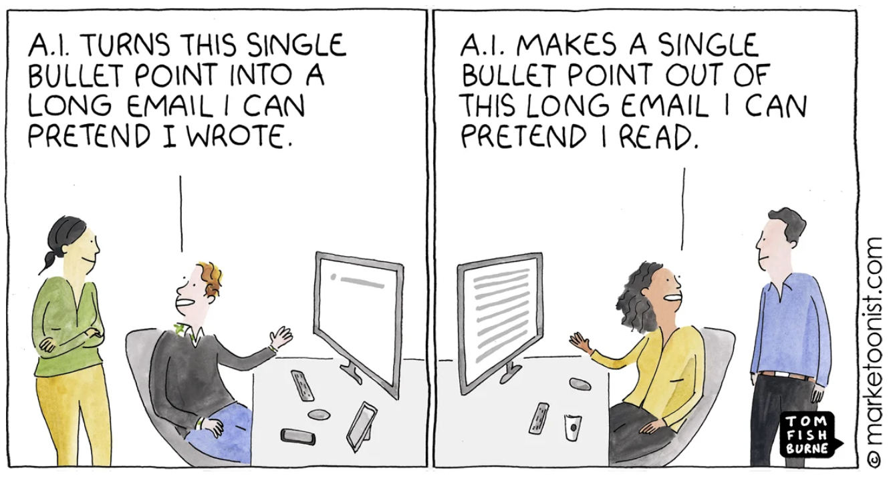

b AI Written, AI Read
https://marketoonist.com/2023/03/ai-written-ai-read.html

not every idea needs to become a linear narrative
AI helps decipher an email into actual action items
bullet points to linear narrative back to bullet points
https://marketoonist.com/2023/03/ai-written-ai-read.html

not every idea needs to become a linear narrative
AI helps decipher an email into actual action items
bullet points to linear narrative back to bullet points